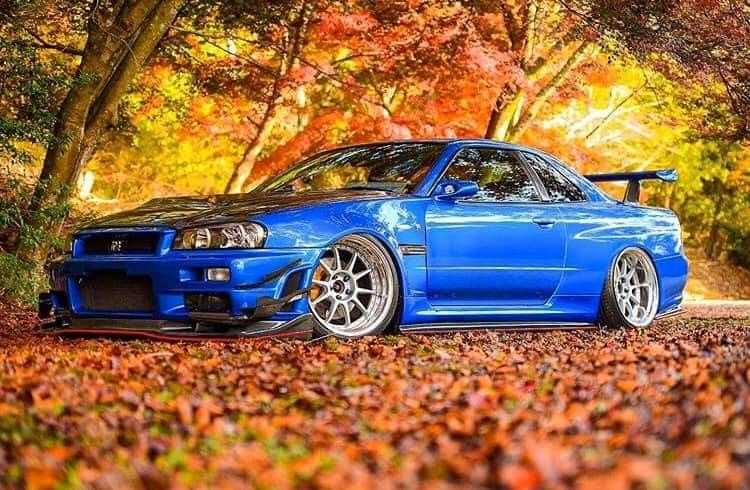
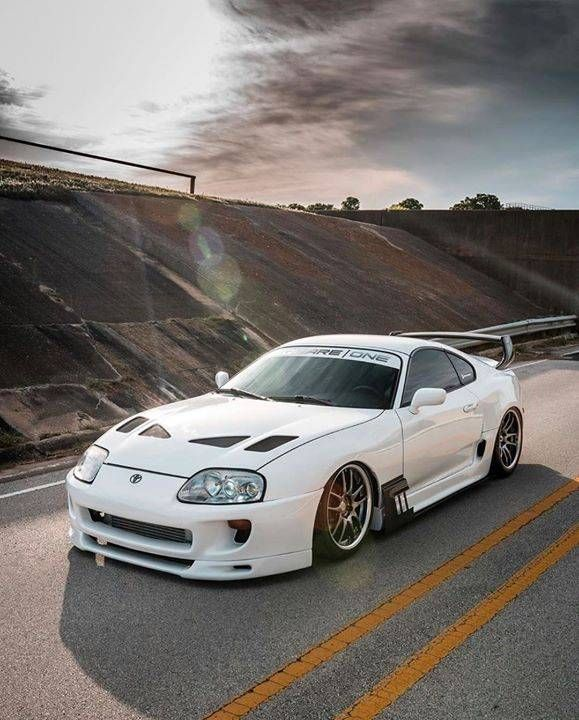
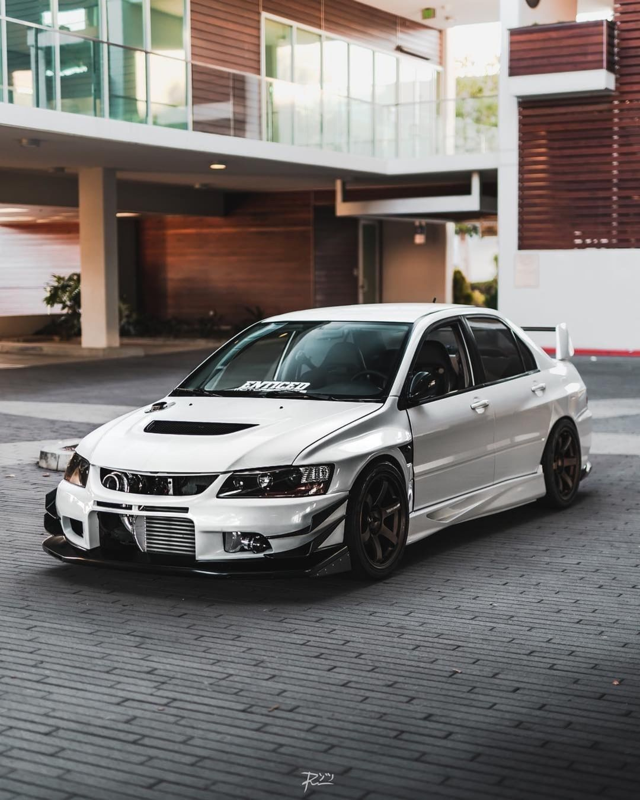
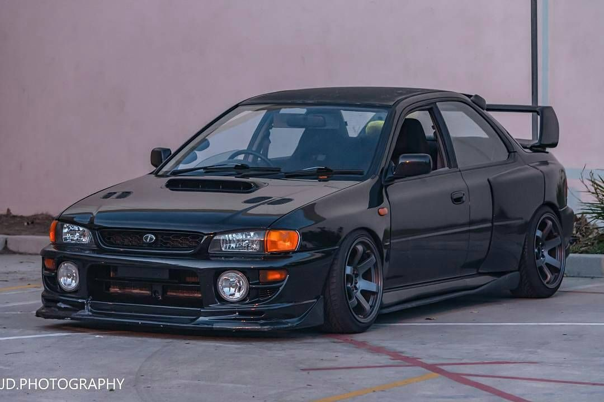

Mejor conocido como godzilla, con motor RB26.
Excelente vehículo con su motor 2JZ.
Con una potencia y motor 4G63, se da durísimo en Rally con AWD.
Con una potencia y un sonido de motor inigualable que posee el motor Boxer, se da durísimo en Rally con AWD.
